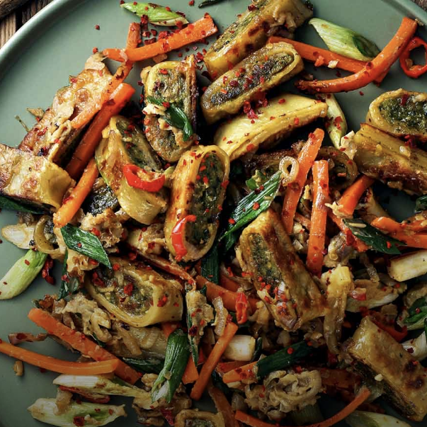

Maultaschen with Vegetables

A new way to experience the famous Maultaschen
This recipes combines the famous Maultaschen with a touch of asian cousine.
The ingredients are estimated for 4 persons.
Ingredients
- 4 onions
- 2 chillis
- 8 spring onions
- 2 carrots
- 4 eggs
- 600g Maultaschen
- oil
- 4 cloves of garlic
- 2 tbs soy sauce
How to cook
- Cut all the vegetables into small pieces.
- Cut the Maultaschen into thick stripes and cook the in a pan with oil for about 4 minutes. Afterwards take them out.
- Heat up a pan with oil and cook the onions, the garlic and the chillis for 2 minutes.
- Add the carrots and spring onions into the pan and cook everything for 2 minutes.
- Stir the eggs in a cup.
- Put the Maultaschen into the pan with the vegetables and add the stirred egg and the soy sauce. Let everything cook for about 3 minutes.
- Enjoy!